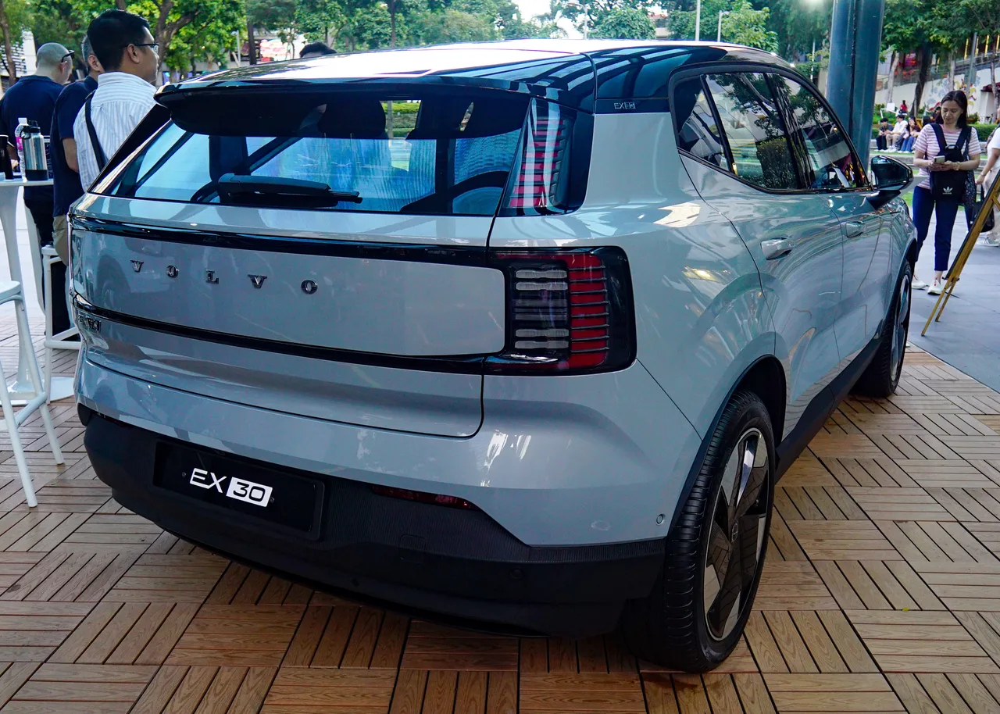
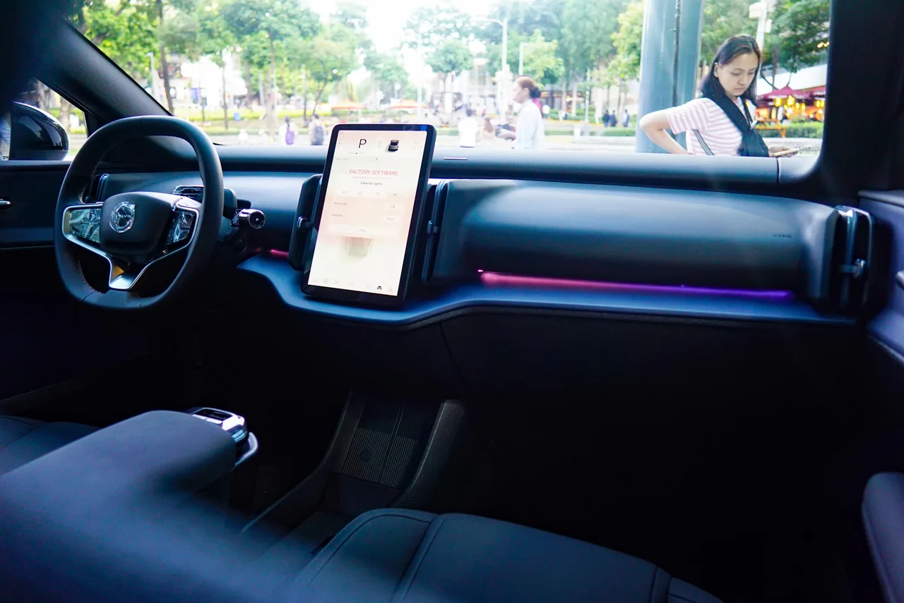

▲ 볼보 EX30 — EX50은 이 차와 EX60 사이의 시장 공백을 채우는 신형 소형 전기 SUV로 개발되고 있다
볼보가 전기 SUV 라인업 재편에 나섭니다. 핵심은 소형 전기 SUV 'EX40'을 대체할 신형 모델 'EX50'입니다. 이름만 보면 상위 트림처럼 느껴지지만, 실제로는 EX40의 후속 모델로 개발되고 있습니다. 전기차 전용 플랫폼을 새로 적용하면서 차체는 커지고 가격은 오히려 낮아지는, 얼핏 모순돼 보이는 변화가 예고돼 있습니다.
1. EX40보다 크면서 왜 더 저렴해지나
답은 플랫폼에 있습니다. 현재 판매 중인 EX40은 내연기관 XC40과 기본 구조를 공유하는 차량입니다. 즉 원래 엔진차로 설계된 뼈대를 전기차로 개조한 방식이라, 배터리 배치나 공간 효율에서 태생적인 한계가 있었습니다. 반면 EX50은 EX60에 처음 도입된 순수 전기차 전용 플랫폼 SPA3를 사용합니다. 처음부터 전기차로 설계된 플랫폼이기 때문에 같은 크기라도 실내·적재공간을 더 넉넉하게 뽑아낼 수 있고, 생산 효율도 높아 오히려 원가를 낮출 여지가 생깁니다. 볼보가 차체를 키우면서도 가격을 낮출 수 있다고 보는 배경이 여기 있습니다.
| 구분 | EX40(현행) | EX50(예상) |
|---|---|---|
| 플랫폼 | XC40 기반 개조 플랫폼 | SPA3(전기차 전용) |
| 차체 크기 | 기준 | 전장·전고 확대 |
| 美 시작가 | 5만 6,545달러 | 4만 달러 후반대(예상) |
| 충전 시스템 | 400V급 | 800V 가능성 |
2. EX30과 EX60 사이, 왜 이 자리가 비어 있었나

▲ 볼보의 전기 SUV 라인업은 소형 EX30부터 중형 EX60까지 이어지며, EX50이 그 사이의 빈자리를 채우게 된다
볼보의 현재 전기 SUV 라인업은 초소형 EX30, 중형 EX60(및 대형 EX90)으로 이어지지만, 그 사이를 메울 명확한 모델이 마땅치 않았습니다. EX40이 그 자리를 채우고 있었지만 앞서 설명한 대로 전용 플랫폼이 아니라는 한계가 있었습니다. EX50은 이 공백을 정식으로 메우는 모델로, 볼보가 전기차 시장 확대에 맞춰 라인업 전체를 다시 정리하는 작업의 일환으로 풀이됩니다. 기존 내연기관 XC40은 당분간 별도로 판매가 계속될 예정이어서, EX40에서 EX50으로의 전환이 XC40 단종을 의미하지는 않습니다.
3. 충전 성능 — 800V로 껑충 뛸 가능성

▲ EX50 역시 EX30·EX60과 유사한 미니멀 인테리어 디자인 언어를 이어받을 것으로 예상된다
SPA3 플랫폼 도입으로 가장 크게 개선될 부분 중 하나는 충전 성능입니다. EX50에는 800V 고전압 전기 시스템이 탑재될 가능성이 거론되는데, 이는 현재 EX40보다 훨씬 짧은 시간에 급속충전을 마칠 수 있다는 뜻입니다. 전기차 전용 플랫폼답게 공간 활용성, 소프트웨어, 충전 성능까지 전반적으로 개선될 것이라는 전망이 나오는 이유입니다.
4. 어디서, 얼마나 만드나 — 슬로바키아 신공장

▲ 볼보 ES90 — SPA3 플랫폼을 공유하는 최신 전기차 라인업이 확장되는 가운데, EX50도 비슷한 디자인 언어를 이어받을 전망이다
EX50은 슬로바키아 코시체에 새로 지어지는 공장에서 생산될 예정입니다. 이 공장은 연간 최대 25만 대 생산 능력을 목표로 하며, 대규모 양산은 2027년 초 시작될 것으로 조정됐습니다. 이후 2027년 가을 정식 출시가 유력합니다. 초기 물량은 유럽 시장에 우선 배정될 가능성이 있으며, 미국에서는 초기 판매 목표가 약 1만 대 수준으로 알려졌습니다.
5. 아직 확인되지 않은 것들
전기차 전용 플랫폼으로의 전환이 '더 크면서 더 싸지는' 역설적인 결과로 이어질 수 있을지, 2027년 가을 EX50의 정식 공개를 지켜볼 대목입니다.